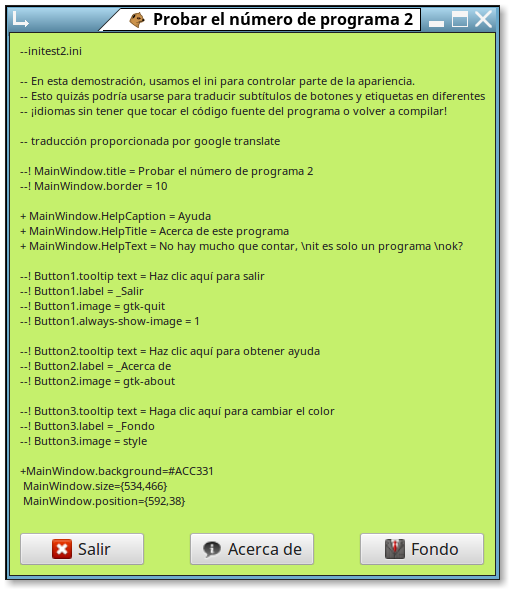

This example shows an easy way to make your EuGTK programs 'multi-lingual', by allowing your users to change the labels and certain texts into their own language!
All of these changes can be made to a simple text *.ini file,
edited either manually with any available text editor, or by
a setup dialog you code within your program.
Loss (erasure) of this ini file will not cause your program to no longer work,
it will just revert to your original language.
Your program can even be bound, shrouded, or compiled, and the user's changes will still be effective, while the user cannot alter your program's operation or see the code!
To use this, each of the items which are to be changeable must be named, and an ini file provided as an example of which changes the user can make.
An example ini to provide:
-- Items below are changeable captions and settings: -- Portions the user can change are highlighted. --!MainWindow.title=Test program --!MainWindow.border=10 --!Button1.tooltip text=Click here to exit --!Button1.label=_Exit --!Button1.image=gtk-quit --!Button2.tooltip text=Click here for help --!Button2.label=_About --!Button2.image=gtk-about --!Button3.tooltip text=Click here to change the color --!Button3.label=_Background --!Button3.image=style -- Items below are text for the help popup screen: + MainWindow.HelpCaption=Help + MainWindow.HelpTitle=About this program + MainWindow.HelpText=There is not much to tell,\nit's just a program\nok?